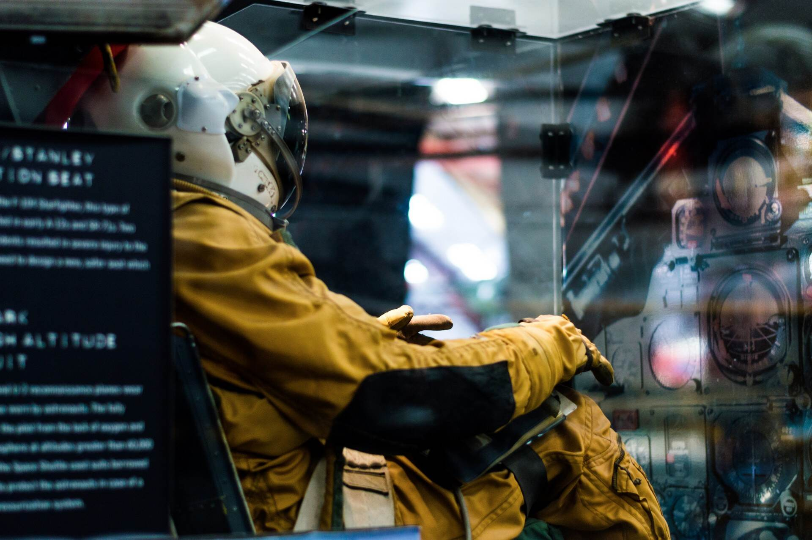

WELCOME SCIENCE MUSEUM

WELCOME TO
SCIENCE MUSEUM
Come join us at the Community Science Museum, where we’re dedicated to making science accessible to everyone. We believe that understanding the world around us is a fundamental right, and we strive to provide engaging and educational experiences for visitors of all ages and backgrounds.
Over the course of human history, science has evolved from our early understanding of fire, wind, water, and earth to the awe-inspiring exploration of galaxies far away and the intricate building blocks of life itself. Our museum aims to create a welcoming space where everyone can experience the wonders of scientific discovery firsthand.
Through interactive exhibits, engaging workshops, and informative displays, we hope to inspire curiosity and encourage exploration. Whether you’re a budding scientist, a curious student, or simply someone with a passion for learning, our museum is designed to ignite a lifelong passion for discovery and deepen your understanding of the world around you.
Join us on this exciting journey of exploration and wonder, and let’s unlock the secrets of science together!

FEEL INVIGORATED
DISCOVER THE FINEST DETAILS
At our museum, we believe that science should not be confined to the pages of a textbook but brought to life through engaging and immersive exhibits. That’s why we proudly showcase over 1,000 different exhibits covering a diverse range of scientific subjects for you to explore. Each exhibit offers a unique opportunity to learn, experiment, and experience the wonders of science firsthand.
Many of these exhibits are designed for interaction, allowing you to engage with the material in a playful and hands-on manner. Whether you’re conducting experiments, exploring interactive displays, or solving challenges, you’ll witness the magic of science unfolding right before your eyes.
And just for fun, while most exhibits are designed for daytime exploration, our dinosaur exhibits come to life at night when everyone has gone home—so make sure to keep an eye out for any after-hours adventures! Join us to feel invigorated as you discover the finest details of science, and let your curiosity lead the way.

INTERACTIV SPACE
WONDERLAB: THE SPACE EXPLORATION AREA
Fuel your imagination and dive into the interactive wonders of WonderLab, the ultimate space exploration area. Here, you’ll find hands-on exhibits and activities that bring the mysteries of the universe to life.
Navigate spacecraft, explore the planets of our solar system, and engage in simulations that challenge your understanding of gravity and motion. WonderLab invites visitors of all ages to discover the marvels of space exploration in an exciting and immersive environment. Join us and let your cosmic journey begin!

SCIENCE PLAYGROUND
Delight in the boundless exploration of the cosmos as children play and learn about science in our engaging playground. This interactive space encourages curiosity and discovery, allowing young minds to explore scientific concepts through fun and hands-on activities. From climbing structures shaped like rockets to interactive games that teach about the universe, the Science Playground offers a unique opportunity for children to learn while they play.

EVENT
DINONIGHTS
Have you ever dreamed of a sleepover in the age of dinosaurs? Don’t miss out on our exciting new dino-themed night event, DinoNights, guaranteed to transport you back in time! Join us for a night filled with thrilling activities, interactive exhibits, and fascinating stories about these magnificent creatures that once roamed the Earth.
Experience the museum in a whole new way as you explore dinosaur exhibits after hours, participate in hands-on activities, and enjoy special presentations. This unforgettable adventure awaits you—bring your sleeping bag and prepare for a night of fun and discovery!

ONLINE EVENT
SPACE SCIENCES TALKS
Uncover the mysteries, boundless wonders, and captivating allure of space in our enthralling series of complimentary online activities, Space Sciences Talks. Join us as experts share their knowledge and insights into the latest discoveries in astronomy, astrophysics, and space exploration.
These engaging sessions are designed to ignite your curiosity and deepen your understanding of the universe. Whether you’re a seasoned space enthusiast or just starting to explore the cosmos, there’s something for everyone. Don’t miss this opportunity to embark on a journey through the stars from the comfort of your home!

EXHIBITION
MAMMOTHS EXHIBITION
Dive into the Ice Age world of mammoths at our captivating exhibition. Get up close to these colossal creatures and discover their secrets as you explore their fascinating adaptations for survival in harsh environments.
Through immersive displays and interactive exhibits, you’ll learn about their behavior, habitat, and the challenges they faced during their reign on Earth. Marvel at the incredible stories of these magnificent animals and gain a deeper understanding of their role in the ecosystem. Join us for an unforgettable journey into the past at the Mammoths Exhibition!

INTERACTIVE GALLERY
Enhance your students’ learning experience with a visit to our Interactive Gallery at the Science Museum. This engaging space is designed to spark curiosity and inspire exploration through hands-on exhibits and interactive displays.
Students will have the opportunity to dive deeper into scientific concepts, engage with fascinating topics, and participate in stimulating activities that make learning fun and memorable. Our Interactive Gallery is the perfect setting for fostering a love of science and encouraging critical thinking among young minds. Join us for an educational adventure that will leave a lasting impression!

HUMAN ORGANS EXHIBITION
Uncover the mysteries of the human body at our captivating exhibition. Experience the marvels of human physiology firsthand as you explore intricate displays that reveal the complexities of our organs and systems.
Through interactive exhibits, detailed models, and informative presentations, you’ll gain a deeper understanding of how the body functions and the incredible processes that sustain life. This exhibition offers a unique opportunity to learn about health, wellness, and the wonders of human anatomy in an engaging and educational environment. Join us to discover the fascinating world of the human body!
FOOD AND DRINK
The museum features an inviting on-site café where visitors can take a well-deserved break and enjoy a variety of refreshing options. The café offers a delightful selection of light lunches, including freshly made sandwiches, crisp salads, and hearty soups, catering to a range of tastes and dietary preferences. For those looking for a quick snack, a variety of tempting treats are also available.
In addition to soft drinks and expertly brewed coffee, you’ll find a selection of teas, juices, and other beverages to suit your palate, ensuring there’s something for everyone. Whether you’re in the mood for a light bite to energize you or simply seeking a comfortable spot to unwind after exploring the exhibits, the café provides a cozy and convenient space to recharge during your visit.
Join us for a relaxing moment in our café, where you can savor delicious refreshments and reflect on your experience at the museum.
ACCESSIBILITY
The Future of Science Bergen Museum is dedicated to ensuring that all visitors, regardless of their physical abilities, can fully enjoy our exhibits and events. We believe that everyone should have the opportunity to explore the wonders of science in an accessible environment.
For visitors with mobility challenges, our museum is equipped with wheelchair-accessible ramps and wide pathways that facilitate smooth and easy movement throughout the facility. Elevators are also available to provide access to all floors, ensuring that everyone can experience the full range of our offerings.
To enhance the experience for visually impaired visitors, we offer a variety of features designed to make navigation and engagement seamless. Audio guides are available for all major exhibits, providing detailed descriptions and information about the displays. Additionally, braille display signs are strategically placed alongside key exhibits and wayfinding areas, assisting visitors in navigating the museum independently.
Our staff is trained to assist visitors with special needs, ensuring that everyone has an enriching and enjoyable experience. Whether you are attending a lecture, exploring our interactive exhibits, or participating in one of our special events, we strive to create an inclusive and welcoming space for everyone.
If you require any further assistance during your visit, our information desk is readily available, and our friendly staff members are always happy to provide additional support. We look forward to welcoming you to our museum!


SHOP
Our museum shop offers a wide variety of memorabilia, allowing you to take a piece of the museum experience home with you. From exclusive souvenirs that showcase our unique exhibits to educational toys and captivating books, there is something for everyone to enjoy.
In addition to these items, you’ll find a fantastic selection of gifts and activity packs designed to engage your curiosity and encourage further exploration of the wonders of science long after your visit. Whether you’re searching for a special memento to remember your experience or a fun way to inspire a love of science in young minds, our shop has plenty of options to choose from.
We invite you to explore our carefully curated collection and discover the perfect item that resonates with your interests and passions. Bring a bit of the museum magic home with you!